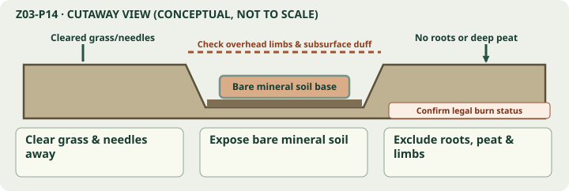

Z03-P14 · Fire and ignition · New manuscript
Clear a lawful fire site down to mineral soil
Remove flammable needles, grass, leaves and organic duff before starting an authorized ground fire.
When it applies · Permitted outdoor campfires where an established metal or stone fire ring is required or lawful ground sites are allowed.
Equipment · Metal fire ring where required, clearing tool, extinguishing water and non-combustible base.

Actions
- Confirm open fires are legally permitted for the exact date and land unit, preferring an established fire ring whenever available or required.[C01, C02, C20]
- Clear dry grass, pine needles, leaves, twigs and loose organic duff away from the fire perimeter down to bare mineral soil, and scan overhead for low branches.[C14, C02]
- Inspect the cleared soil for buried tree roots or deep spongy peat; organic subsurface layers can ignite silently and creep beyond the visible ring.[C14, C04]
Failure recognition · Building a fire directly on thick pine duff or dry forest leaf litter because the surface looks damp after morning dew.[C14, C02]
Verify · Confirm bare mineral soil around the burn area, clear overhead canopy and ready water before striking any ignition source.[C14, C02, C04, ED]
Stop or change course · Reject sites with deep peat, exposed tree roots, dry tall grass or overhanging limbs; use a permitted stove or no-fire warmth instead.[C14, C01, C08]
Evidence and editorial notes
- C01 · Minnesota DNR · Fire Danger and Burning Restrictions (current web edition; verify at use)
- Section: Fire danger and burning restrictions map and links · Conditions: Current Minnesota location, date and jurisdiction
Support: Check current restrictions and local authority requirements before lighting.
Limitations: Restrictions can change daily with humidity, wind, and drought; verify immediately before use. · Conflicting evidence: None; local jurisdiction always supersedes general notes.
Editorial note: Mandatory legal check before any live fire card. · Specialist reviewer: Fire prevention and local land management
Primary source · checked 2026-11-24 - C02 · USDA Forest Service / Smokey Bear · Smokey Bear’s Campfire Safety Guide (agency PDF)
- Section: Build your campfire; choose a location · Conditions: Where campfires are currently permitted
Support: Use an established fire ring where required or available. Protect the area from nearby combustible materials, avoid windy conditions and keep water ready.
Limitations: Site clearances vary by fuel load, slope, and wind; no universal safe radius fits all terrain. · Conflicting evidence: None; aligns with USFS-FIRE.
Editorial note: Grounds site-selection and ring-preparation procedures. · Specialist reviewer: Fire prevention and land management
Primary source · checked 2026-11-24 - C04 · USDA Forest Service / Smokey Bear · Smokey Bear’s Campfire Safety Guide (agency PDF)
- Section: Maintain and extinguish a campfire · Conditions: Occupied campfire, water and tools available
Support: Stay with the fire. Drown, stir and add water again until cool. Leaving visible embers or merely covering them is unsafe.
Limitations: Deep duff or peat soils can hold smoldering embers underground even after surface ash cools. · Conflicting evidence: None; prohibits dirt-only burial as primary extinguishment.
Editorial note: Enforces drown-stir-feel-cold cycle before site departure. · Specialist reviewer: Fire prevention and land management
Primary source · checked 2026-11-24 - C08 · NWS · What To Do If You're Caught in a Winter Storm (current web edition)
- Section: Outside > If there is no shelter nearby · Conditions: Stranded outdoors during a winter storm
Support: Seek shelter and block wind and wet exposure. Reduce heat loss from contact with snow or ground.
Limitations: Does not guarantee overnight survival without adequate insulation or rescue. · Conflicting evidence: None; reinforces no-fire exposure control priority.
Editorial note: Anchors no-fire fallback when ignition fails or is banned. · Specialist reviewer: Cold-weather shelter specialist
Primary source · checked 2026-11-24 - C14 · USDA Forest Service · Know Before You Go: Fire (current web edition)
- Section: Know Before You Go > Extinguish and Site Clearance · Conditions: Authorized outdoor campfire on mineral soil
Support: Clear flammable grass, needles, and twigs down to mineral soil before building a small fire, keep flames away from overhanging branches, and confirm cold ash before leaving.
Limitations: Root systems and organic duff beneath shallow clearing can ignite invisibly. · Conflicting evidence: None; aligns with SMOKEY C02/C04.
Editorial note: Underpins mineral-soil cutaway and underground root-fire failure cards. · Specialist reviewer: Wildland fire prevention
Primary source · checked 2026-11-24 - C20 · Minnesota DNR · State Park Rules (current web edition)
- Section: Minnesota State Park Rules > Firewood and Fires · Conditions: Minnesota state parks and public campgrounds
Support: Build fires only in designated rings where permitted and use only approved local or certified firewood to prevent invasive forest-pest spread.
Limitations: Rules differ between state parks, state forests, and federal wilderness areas; verify unit rules. · Conflicting evidence: None; regionalized legal compliance for Minnesota.
Editorial note: Documents lawful wood sourcing and designated-ring constraints. · Specialist reviewer: Land management and forestry
Primary source · checked 2026-11-24
Source lineage · USFS campfire safety and Smokey Bear guide; new manuscript · Classification · New manuscript.